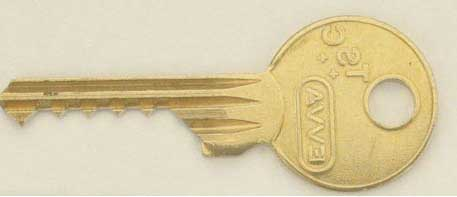
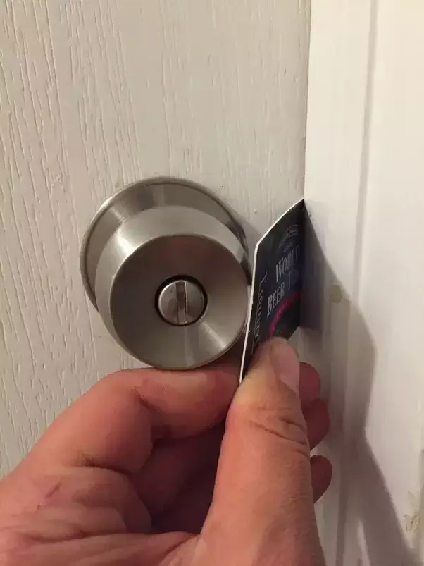
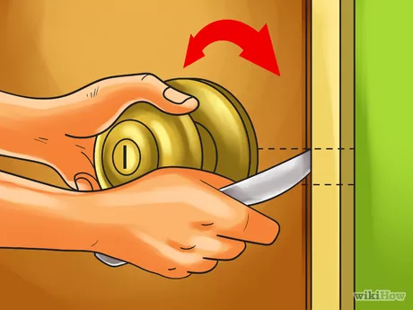
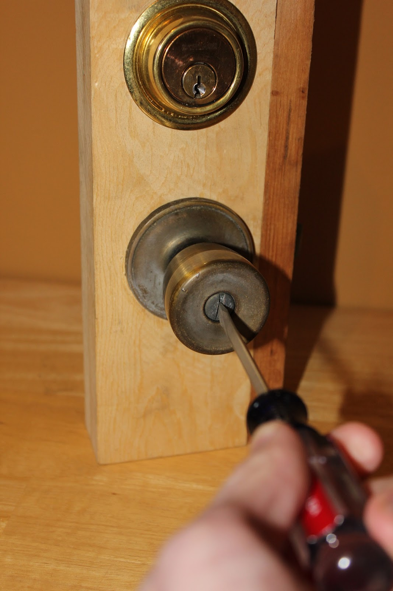
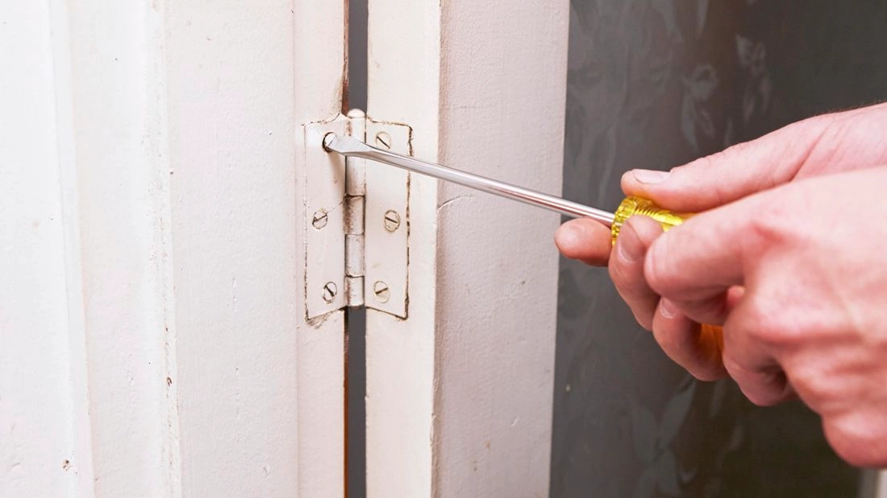
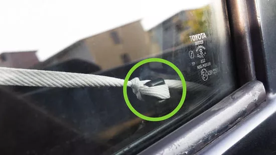

Think lockpicking is the only way to open a lock without a key? Think again!
There are many different ways to open a lock with using a key or lockpicking.
Sometimes all that's needed is an understanding of locks and a little bit of creativity.
Lock Bumping
Lock bumping involves using a '999' key which is a key where all the cuts are of a maximum depth of 9.
To use this, insert the key into the lock and then pull it one cut back. Using a bump hammer or hand, hit the key such that the pins will be thrown upwards, clearing the shear line.
Unfortunately, there are anti-bump locks which make lock bumping almost impossible.
Loiding
Loiding, also known as shimming, involves using a thin tool to unlock the spring-latch lock.
To do this, insert the thin tool between the door latch and the strike plate to retract the sprint latch.
This technique will only work if the slant of the latch is facing towards you. A good way to figure this out is to look at the door hinges. If the hinges are not on your side of the door, then the slant is facing you.
Although this technique does work, it is ineffective against deathlatch plungers and deadbolts.
A great tool for this technique is the standard credit card if the slant of the latch is facing you.
To use a credit card for loiding, put the credit card between the doorframe and the lock to reach the spring latch. Once the spring-latch is reached, keep pushing the credit card into the latch to make it completely retract. This will cause the lock to unlock.
Likewise, knives can also be used for this technique, however a larger gap between the door and the doorframe will be required.
If the slant of the latch is not facing you, a tool that can be used as a hook will work here such as a wire hanger or a door latch shim.
When performing loiding on slant of the latch is not facing you, insert the thin hook tool between the door and the doorframe and feed it through such that it hooks around the latch. Pull the hooking tool to cause the latch to retract and unlock the lock.
 Screwdrivers
Screwdrivers are a great way to remove the doorknob covering the latch and can also be used for the loiding technique.
It can open a privacy lock with a button-lock or a thumb turn.
For a button-lock privacy lock, the screwdriver must be pushed into the hole until a click is heard.
For a thumb-turn, the screwdriver must be inserted into the hole and rotated until it falls into the slit. Continue to rotate it until a click is heard.
Removing Hinges
Taking apart the hinges is a way to avoid any techniques involving locks and can be completed with a hammer or a screwdriver.
This, however, will only work if the hinges are on your side of the door.
Shoelaces To Open a Car Door
Shoelaces can be used to open a car door that has vertical locks.
Firstly, a slip knot needs to be tied in the middle of the shoelace and the knot is pushed in between the car door and the car frame. Pull the knot down using the two ends of the shoelaces so that the knot is looped over the lock. Finally, pull on shoelace end to tighten and then pull both ends of the shoelace upwards to unlock the car door.
